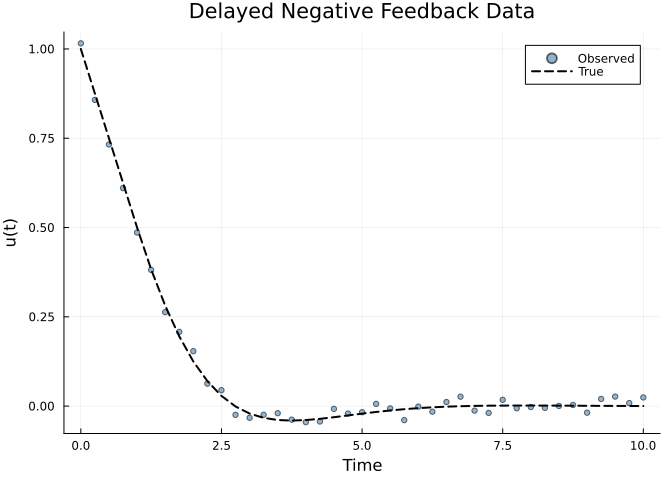
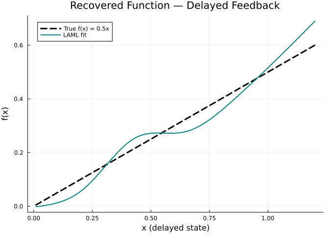
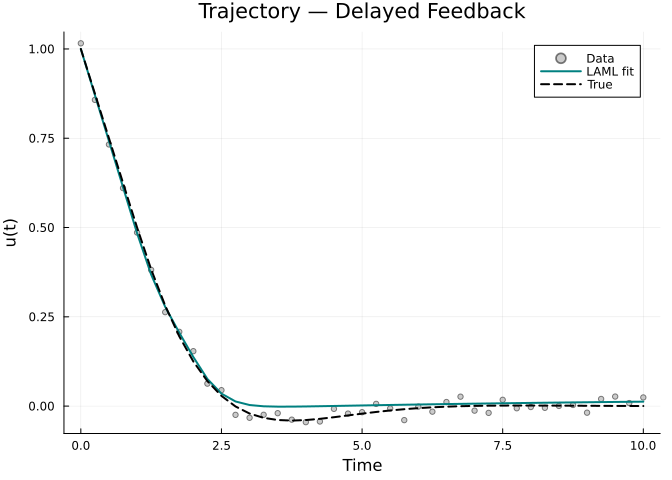
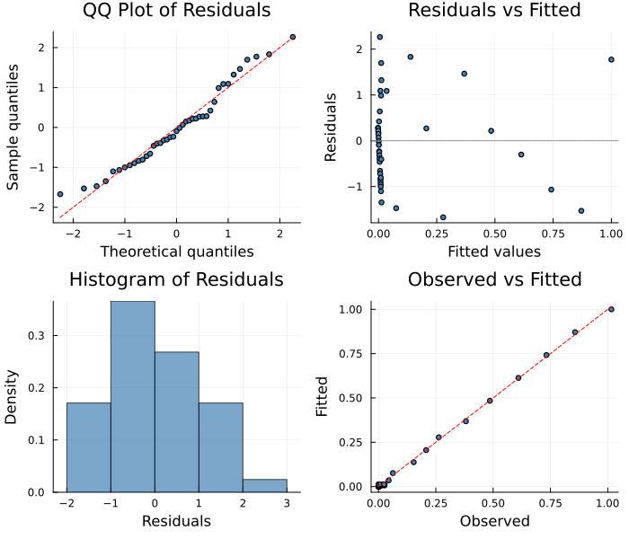

Delay Differential Equations
Overview
Many ecological systems exhibit time delays — for example, predator responses to prey density may depend on prey levels at some past time, or population dynamics may depend on maturation times. PartiallySpecifiedModels.jl supports delay differential equations (DDEs) through integration with DelayDiffEq.jl.
A DDE has the form:
\[\frac{du}{dt} = f(u(t), u(t - \tau), p, t)\]
where $\tau$ is the delay and the history function $h(t)$ provides initial values for $t \leq t_0$.
using PartiallySpecifiedModels
using OrdinaryDiffEq
using DelayDiffEq
using Plots; default(fmt=:png)
using Random
Random.seed!(42)TaskLocalRNG()Example 1: Delayed Negative Feedback
We consider a simple model with delayed negative feedback:
\[\frac{du}{dt} = -f(u(t - \tau))\]
where $f$ is an unknown function and $\tau = 1.0$. The true function is $f(x) = 0.5x$ (linear decay acting on the delayed state).
Generate Data
function dde_true!(du, u, h, p, t)
u_delayed = h(p, t - 1.0)
du[1] = -0.5 * u_delayed[1]
end
h_func(p, t) = [1.0] # constant history
prob_true = DDEProblem(dde_true!, [1.0], h_func, (0.0, 10.0);
constant_lags=[1.0])
sol_true = solve(prob_true, MethodOfSteps(Tsit5()); saveat=0.25)
t_data = collect(sol_true.t)
noise = 0.02
data_vals = [sol_true.u[i][1] + noise * randn() for i in 1:length(t_data)]
data_matrix = reshape(max.(data_vals, 0.001), :, 1)41×1 Matrix{Float64}:
1.015767112032086
0.8574028280809121
0.732524130355808
0.610334900711303
0.4859560960248465
0.38136086263908175
0.2629915322732008
0.20794491662233638
0.15377366551423094
0.06290358229925974
⋮
0.001
0.001
0.001
0.0031810168566433613
0.001
0.02001289009105699
0.026749333866878167
0.00846453382610652
0.024216939814217422Observed Data

Figure 1: Delayed negative feedback: observed data vs true solution
Define the PSM Problem
The key additions for DDEs are:
delays: a vector of constant delay valueshistory: a functionh(p, t)returning the state for $t \leq t_0$- The dynamics function takes an extra
hargument:f!(du, u, h, p, t)
function dde_psm!(du, u, h, p, t)
u_delayed = h(p, t - 1.0)
du[1] = -p.f(u_delayed[1])
end
uf = BSplineApproximator(:f, (0.0, 1.5), 8; initial=x -> 0.3 * x)
prob = PSMProblem(dde_psm!, [1.0], (0.0, 10.0), [uf];
data_times=t_data, data_values=Float64.(data_matrix),
obs_to_state=[1], known_params=NamedTuple(),
likelihood=PartiallySpecifiedModels.Gaussian(),
delays=[1.0],
history=h_func)PSMProblem{typeof(dde_psm!), Vector{Float64}, Gaussian, Tsit5{typeof(OrdinaryDiffEqCore.trivial_limiter!), typeof(OrdinaryDiffEqCore.trivial_limiter!), Static.False}}(dde_psm!, [1.0], (0.0, 10.0), BSplineApproximator[BSplineApproximator(:f, (0.0, 1.5), 8, var"#8#9"())], [0.0, 0.25, 0.5, 0.75, 1.0, 1.25, 1.5, 1.75, 2.0, 2.25 … 7.75, 8.0, 8.25, 8.5, 8.75, 9.0, 9.25, 9.5, 9.75, 10.0], [1.015767112032086; 0.8574028280809121; … ; 0.00846453382610652; 0.024216939814217422;;], [1.0; 1.0; … ; 1.0; 1.0;;], [1], NamedTuple(), Gaussian(), Tsit5{typeof(OrdinaryDiffEqCore.trivial_limiter!), typeof(OrdinaryDiffEqCore.trivial_limiter!), Static.False}(OrdinaryDiffEqCore.trivial_limiter!, OrdinaryDiffEqCore.trivial_limiter!, static(false)), Dict{Symbol, Any}(), false, [1.0], h_func)Fit with LAML
sol_laml = solve(prob, LAML(maxiters=100, verbose=false));Recovered Function

Figure 2: Recovered unknown function f(x) vs true linear function
Fitted Trajectory

Figure 3: Fitted trajectory vs observed data for the delayed feedback model
Limitations and Oscillatory DDEs
[!WARNING]
LAML and oscillatory DDEs
The IRLS+PCLS linearization used by
LAMLworks well for DDEs that approach a stable equilibrium (as in Example 1 above), but struggles with oscillatory DDEs such as Nicholson’s blowfly equation. The delay creates a complex mapping between spline coefficients and the trajectory, and the linearization cannot capture this nonlinear coupling.For oscillatory DDEs, consider:
AdamSolver— uses autodiff through the DDE solve (works if the dynamics are differentiable)GCVSolver— the same IRLS structure asLAML, but selects λ by cross-validationVariationalSolver— approximate Bayesian inference, handling the nonlinear coupling by sampling from q(β)See Vignette 03: Lotka–Volterra for a similar discussion of linearization limitations in oscillatory ODE systems.
[!IMPORTANT]
Solvers that do not support DDEs
Not every solver accepts a delay problem, and two of the failures are noisy rather than graceful:
CollocationLAMLrejects DDEs with an explicit, informative error: its collocation residual evaluates the dynamics with the 4-argument ODE signature and cannot supply the delayed history.MCMCSolverandBNGSolverfail with aMethodErrorfor the same underlying reason — both build a 4-argument closure over the dynamics, so the 5-argument DDE signaturef!(du, u, h, p, t)does not match. There is no up-front guard, so the failure surfaces mid-solve.Use
LAML,GCVSolver,AdamSolverorVariationalSolverfor delay problems.
DDE Problem Setup
| Component | ODE | DDE |
|---|---|---|
| Dynamics | f!(du, u, p, t) | f!(du, u, h, p, t) |
| History | Not needed | h(p, t) → state vector |
| Delays | None | delays=[τ₁, τ₂, ...] |
| Accessing delayed state | N/A | h(p, t - τ) |
| Solver | Tsit5() etc. | MethodOfSteps(Tsit5()) (automatic) |
| Compatible PSM solvers | All | LAML, GCVSolver, AdamSolver, VariationalSolver |
Diagnostic Plots
A standard 4-panel diagnostic display assesses residual behaviour. The QQ plot checks normality of standardized residuals, “Residuals vs Fitted” detects systematic patterns, the histogram visualises the residual distribution, and “Observed vs Fitted” checks overall calibration.
using PartiallySpecifiedModels: appraise
diag = appraise(sol_laml)
p_qq = scatter(diag.qq_theoretical, diag.qq_sample,
xlabel="Theoretical quantiles", ylabel="Sample quantiles",
title="QQ Plot of Residuals", ms=3, legend=false, color=:steelblue)
mn, mx = extrema(vcat(diag.qq_theoretical, diag.qq_sample))
plot!(p_qq, [mn, mx], [mn, mx], color=:red, ls=:dash, label="")
p_rf = scatter(diag.fitted, diag.residuals,
xlabel="Fitted values", ylabel="Residuals",
title="Residuals vs Fitted", ms=3, legend=false, color=:steelblue)
hline!(p_rf, [0], color=:gray, ls=:dot)
p_hist = histogram(diag.residuals, normalize=:pdf,
xlabel="Residuals", ylabel="Density",
title="Histogram of Residuals", legend=false, color=:steelblue, alpha=0.7)
p_of = scatter(diag.observed, diag.fitted,
xlabel="Observed", ylabel="Fitted",
title="Observed vs Fitted", ms=3, legend=false, color=:steelblue)
mn2, mx2 = extrema(vcat(diag.observed, diag.fitted))
plot!(p_of, [mn2, mx2], [mn2, mx2], color=:red, ls=:dash, label="")
plot(p_qq, p_rf, p_hist, p_of, layout=(2, 2), size=(700, 600))
Durbin-Watson: 2.172[!TIP]
See Also
- Vignette 27: Predator–Prey Functional Response — ecological application with bootstrap confidence intervals
Summary
PartiallySpecifiedModels.jl supports delay differential equations through the delays and history keyword arguments to PSMProblem. The DDE dynamics function takes an extra history argument h that provides delayed state values. Four solvers work with DDEs via automatic wrapping with MethodOfSteps: LAML, GCVSolver, AdamSolver and VariationalSolver.